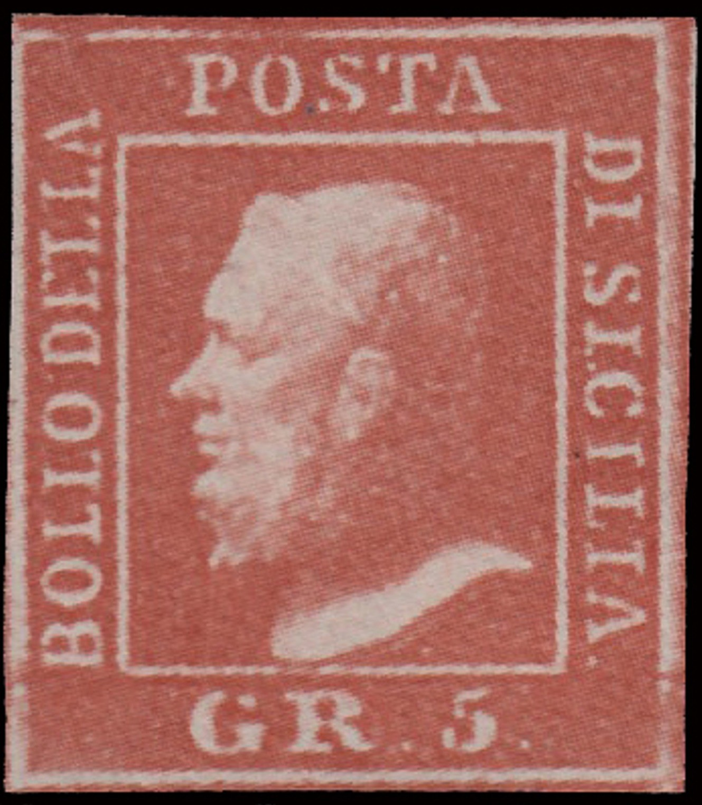
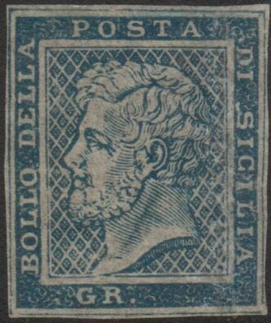

Return To Catalogue - Sicily forgeries, part 1 - Sicily forgeries, part 2 - Sicily - Italy
Note: on my website many of the
pictures can not be seen! They are of course present in the
catalogue;
contact me if you want to purchase the catalogue.
Forgeries made from photographs (or photo-lithographed?), offered in great quantities and sometimes even as 'reprints' on Internet auctions (2005). They are sold uncancelled but also with cancel. They are often offered together with other modern forgeries of the Italian States. There are many coloured dots in the white spaces of the design. When investigated closely, the design consists of small dots (from a computer-printer?). Also, the neck with crossed lined cannot be clearly distinguished (it has become all blurred):


So-called 'reprints', actually some kind of photograph or
photo-lithographed forgery


Zooming in clearly shows that these forgeries were made from a
photograph.

A forgery with cancel, possibly from the same source

These forgeries pasted on a forged letter to Valparaiso
I've seen another letter with these forgeries, also with the "PALERMO 19 GEN 59 PARMENZA" and the red "PIROSCAPI POSTALI FRANCESI" cancels.

Essays? or simply forgeries?
Stamps - Francobolli - Timbres-Poste - Briefmarken
{kind=link}
{kind=link}